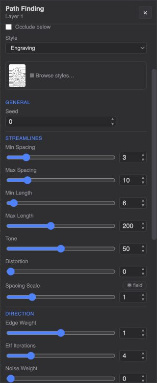
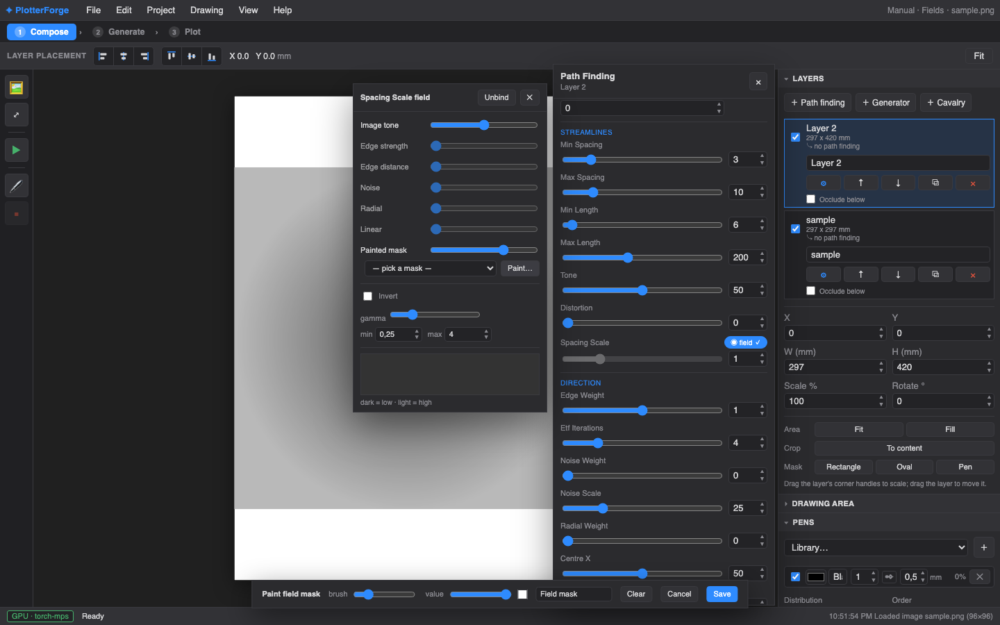
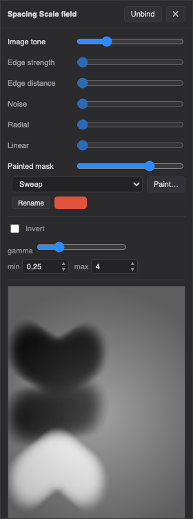
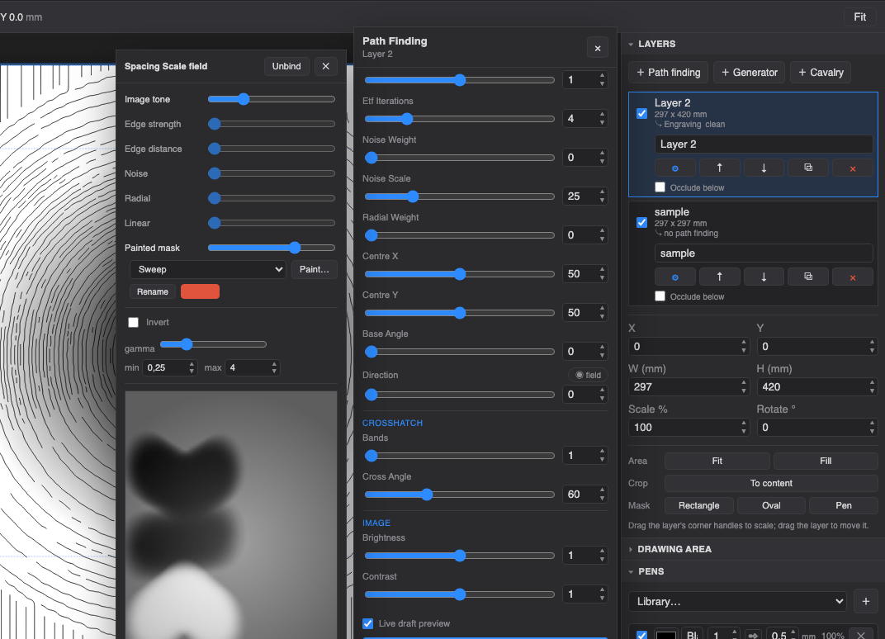

Most plotter tools give you knobs — one number for the whole page. Fields turn each knob into a surface: dot size that swells in the shadows, dashes that comb around a face, engraving lines you steer by hand with a brush. This guide shows you how, no math required.
Any parameter with a ◉ field chip next to its name can be bound to a field. Instead of one value everywhere, the parameter is looked up per point from a grayscale map that stretches across your image: where the map is dark the parameter is low, where it's light the parameter is high (you choose the low/high range). The number in the slider is simply ignored while a binding is active — unbind and it comes back.
A field is a mix of weighted sources. Stack them like translucent layers: a little image tone, a touch of noise, a painted mask on top. The editor previews the result live as a grayscale image.
Dark areas of your photo read high. The classic: parameters that follow the shadows.
High wherever the image has contrast — outlines, texture, detail.
Grows with distance from the nearest edge. Great for calm interiors vs. busy contours.
Coherent, organic variation (Perlin). Scale sets the feature size, seed re-rolls it.
A circular gradient from a centre point you choose. Vignettes, halos, targets.
A straight gradient at any angle. Sunrise fades, left-to-right ramps.
Your brush. Paint exactly where you want the effect — the most direct control there is.
Below the sources: Invert flips the map, gamma bends the midtones (high gamma pushes the effect into only the darkest regions), and min / max set what the darkest and lightest points of the field mean in the parameter's real units — e.g. stipple dots from 0.3 mm to 2.5 mm.

The Engraving PFM shades your image with flowing lines: tone controls how tightly they pack, a direction field controls where they flow. By default direction comes from the image itself (lines follow form, like a burin following a cheekbone). Binding Direction to a painted field lets you comb the lines wherever you want instead.
Prefer to learn in the app? Help → ✦ Tutorial: paint a direction field walks you through these exact steps with live tooltips.

For direction fields, the gray you paint maps to the line angle:
Line direction has no “front”, so the scale wraps: white lands back at horizontal. The canvas starts neutral mid-gray, which reads as vertical — there is no “no opinion” gray, so paint generously. Sweep the value slider between black and mid-gray to steer between horizontal and vertical.


On any stippling PFM, bind Stipple Size, keep a single Image tone layer at weight 1, set min ≈ 0.3 and max ≈ 2.5. Shadows get bold dots, highlights get whispers. Add a low-weight Noise layer (scale ~20) so the transition never looks mechanical.
On the Dashes style, bind Dash Angle and paint a direction mask — every dash becomes a comb stroke. Keep Distortion around 20–40 so it stays hand-made.
All Streamline PFMs (and Engraving) have a bindable Spacing Scale. Bind it to a painted mask and brush dark where you want the lines to crowd, light where they should breathe — independent of the image's own tone.
On Engraving, set Bands to 2–3 with a Cross angle around 60°. Midtones get one pass; shadows get crossed passes, exactly like classical crosshatching.
Add a Radial layer to any scalar binding and invert it: the effect concentrates in the middle of the page and fades to the margins.
Bindings travel with the layer. They're saved in the project and re-applied on every regenerate. Regions work too — if the layer is limited to an AI region, the field is sampled over that region's image. The slider comes back. Unbind (button in the editor header) and the parameter returns to its plain value. Masks are reusable — paint once, bind it to several parameters or several layers; rename or delete them from the Painted mask row in the field editor.